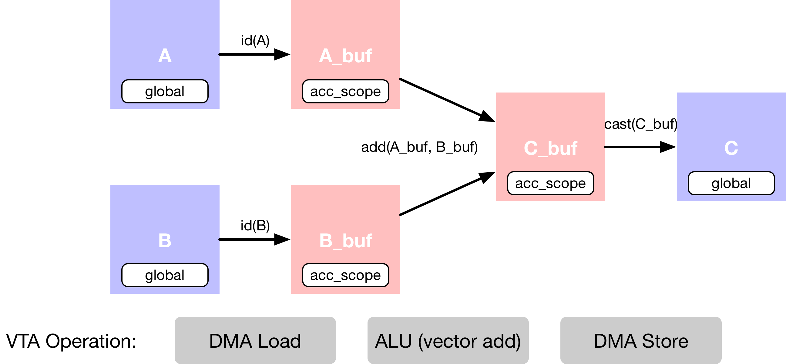

VTA 入门#
原作者: Thierry Moreau
这是关于如何使用 TVM 编程 VTA 设计的入门教程。
在本教程中，将演示在 VTA 设计的向量 ALU 上实现向量加法的基本 TVM 工作流。此过程包括将计算 lower 到低级加速器运算所需的特定调度变换。
首先，需要导入 TVM，这是深度学习优化编译器。还需要导入 VTA python 包，其中包含针对 TVM 的 VTA 特定扩展，以实现 VTA 设计。
import os
import tvm
from tvm import te
import vta
import numpy as np
加载 VTA 参数#
VTA 是模块化和可定制的设计。因此，用户可以自由地修改影响硬件设计布局的高级硬件参数。这些参数在 tvm/3rdparty/vta-hw/config/vta_config.json 中通过它们的 log2 值指定。
这些 VTA 参数可以通过 vta.get_env 函数加载。
最后，TVM 目标也在 vta_config.json 文件中指定。当设置为 sim 时，执行将发生在 VTA 仿真器行为内。如果您想在 Pynq FPGA 开发平台上运行本教程，请遵循 VTA 基于 Pynq 的测试设置 指南。
env = vta.get_env()
FPGA 编程#
当针对 Pynq FPGA 开发板时，需要使用 VTA bitstream 配置该板。
需要 TVM RPC 模块和 VTA 仿真器模块：
from tvm import rpc
from tvm.contrib import utils
from vta.testing import simulator # 此处一定要有
警告
若 vta 是 sim 模式，一定要载入 simulator 模块，否则会触发异常。
从操作系统环境中读取 Pynq RPC 主机 IP 地址和端口号：
host = os.environ.get("VTA_RPC_HOST", "192.168.2.99")
port = int(os.environ.get("VTA_RPC_PORT", "9091"))
在 Pynq 上配置 bitstream 和运行时系统，以匹配 vta_config.json 文件指定的 VTA 配置。
if env.TARGET == "pynq" or env.TARGET == "de10nano":
# 确保使用 RPC=1 编译 TVM
assert tvm.runtime.enabled("rpc")
remote = rpc.connect(host, port)
# 重新配置 JIT runtime
vta.reconfig_runtime(remote)
# 用预编译的 VTA bitstream 编程 FPGA。
# 通过将 path 传递给 bitstream 文件而不是 None，
# 您可以使用自定义 bitstream 编程 FPGA。
vta.program_fpga(remote, bitstream=None)
# 在仿真模式中，在本地托管 RPC 服务器。
elif env.TARGET in ("sim", "tsim", "intelfocl"):
remote = rpc.LocalSession()
if env.TARGET in ["intelfocl"]:
# program intelfocl aocx
vta.program_fpga(remote, bitstream="vta.bitstream")
计算声明#
第一步，需要描述计算。TVM 采用张量语义，每个中间结果表示为多维数组。用户需要描述生成输出张量的计算规则。
在这个例子中，描述了向量加法，它需要多个计算阶段，如下面的数据流程图所示。
首先，描述存在于 main memory 中的输入张量
A和B。其次，需要声明中间张量
A_buf和B_buf，它们将位于 VTA 的 on-chip buffers 中。有了这个额外的计算阶段，就可以显式地分阶段进行 cached 的读写操作。第三，描述向量加法运算，它将
A_buf添加到B_buf以生成C_buf。最后的运算是强制转换并复制回 DRAM，到结果张量
C中。

Input 占位符#
以平铺（tiled）数据格式描述占位符张量 A 和 B，以匹配 VTA 向量 ALU 施加的数据布局要求。
对于 VTA 的一般用途的运算，如向量加法，tile 大小为 (env.BATCH, env.BLOCK_OUT)。维度在 vta_config.json 配置文件中指定，默认设置为 (1, 16) 向量。
# 输出通道因子 m -总共 64 x 16 = 1024 输出通道
m = 64
# Batch 因子 o - 总共 1 x 1 = 1
o = 1
# VTA 向量数据 shape
shape = (o, m, env.BATCH, env.BLOCK_OUT)
此外，A 和 B 的数据类型也需要匹配 env.acc_dtype，由 vta_config.json 文件设置为 32 位整型。
# 平铺数据格式的 A 占位符张量
A = te.placeholder(shape, name="A", dtype=env.acc_dtype)
# 平铺数据格式的 B 占位符张量
B = te.placeholder(shape, name="B", dtype=env.acc_dtype)
Copy Buffers#
硬件加速器的特点之一是，必须对 on-chip memory 进行显式管理。这意味着需要描述中间张量 A_buf 和 B_buf，它们可以具有与原始占位符张量 A 和 B 不同的内存作用域。
稍后在调度阶段，可以告诉编译器 A_buf 和 B_buf 将存在于 VTA 的 on-chip buffer（SRAM）中，而 A 和 B 将存在于 main memory（DRAM）中。将 A_buf 和 B_buf 描述为恒等函数计算的运算结果。这可以被编译器解释为 cached 的读运算。
# A copy buffer
A_buf = te.compute(shape, lambda *i: A(*i), "A_buf")
# B copy buffer
B_buf = te.compute(shape, lambda *i: B(*i), "B_buf")
向量加法#
现在可以用另一个 compute 运算来描述向量加法结果张量 C。compute 函数采用张量的形状，以及描述张量每个位置的计算规则的 lambda 函数。
此阶段没有计算发生，因为只是声明了计算应该如何完成。
# 描述 VTA 中的向量加法
fcompute = lambda *i: A_buf(*i).astype(env.acc_dtype) + B_buf(*i).astype(env.acc_dtype)
C_buf = te.compute(shape, fcompute, name="C_buf")
Casting 结果#
计算完成后，需要将 VTA 计算的结果发送回主存储器（main memory）
内存存储限制
VTA 的特点之一是，它只支持窄化（narrow） env.inp_dtype 数据类型格式的 DRAM 存储。这让我们能够减少内存传输的数据 footprint（详见基本矩阵乘法的例子）。
对窄化的输入激活数据格式执行最后一个 typecast 运算。
# 转换为输出类型，并发送到 main memory
fcompute = lambda *i: C_buf(*i).astype(env.inp_dtype)
C = te.compute(shape, fcompute, name="C")
这就结束了本教程的计算声明部分。
调度计算#
虽然上面的几行描述了计算规则，但我们可以通过许多方式得到 C。TVM 要求用户提供一种名为 调度 （schedule） 的计算实现。
调度是对原始计算的一组变换，它在不影响正确性的情况下变换计算的实现。这个简单的 VTA 编程教程旨在演示基本的调度变换，将原始调度映射到 VTA 硬件原语（primitives）。
默认调度#
在构造了调度之后，默认情况下，调度会以如下方式计算 C：
s = te.create_schedule(C.op)
# 查看生成的调度
print(tvm.lower(s, [A, B, C], simple_mode=True))
@main = primfn(A_1: handle, B_1: handle, C_1: handle) -> ()
attr = {"from_legacy_te_schedule": True, "global_symbol": "main", "tir.noalias": True}
buffers = {A: Buffer(A_2: Pointer(int32), int32, [1024], []),
B: Buffer(B_2: Pointer(int32), int32, [1024], []),
C: Buffer(C_2: Pointer(int8), int8, [1024], [])}
buffer_map = {A_1: A, B_1: B, C_1: C}
preflattened_buffer_map = {A_1: A_3: Buffer(A_2, int32, [1, 64, 1, 16], []), B_1: B_3: Buffer(B_2, int32, [1, 64, 1, 16], []), C_1: C_3: Buffer(C_2, int8, [1, 64, 1, 16], [])} {
allocate(A_buf: Pointer(global int32), int32, [1024]), storage_scope = global;
allocate(B_buf: Pointer(global int32), int32, [1024]), storage_scope = global {
for (i1: int32, 0, 64) {
for (i3: int32, 0, 16) {
let cse_var_1: int32 = ((i1*16) + i3)
A_buf_1: Buffer(A_buf, int32, [1024], [])[cse_var_1] = A[cse_var_1]
}
}
for (i1_1: int32, 0, 64) {
for (i3_1: int32, 0, 16) {
let cse_var_2: int32 = ((i1_1*16) + i3_1)
B_buf_1: Buffer(B_buf, int32, [1024], [])[cse_var_2] = B[cse_var_2]
}
}
for (i1_2: int32, 0, 64) {
for (i3_2: int32, 0, 16) {
let cse_var_3: int32 = ((i1_2*16) + i3_2)
A_buf_2: Buffer(A_buf, int32, [1024], [])[cse_var_3] = (A_buf_1[cse_var_3] + B_buf_1[cse_var_3])
}
}
for (i1_3: int32, 0, 64) {
for (i3_3: int32, 0, 16) {
let cse_var_4: int32 = ((i1_3*16) + i3_3)
C[cse_var_4] = cast(int8, A_buf_2[cse_var_4])
}
}
}
}
虽然此调度是合理的，但它不会编译到 VTA。为了获得正确的代码生成（code generation），需要应用调度原语（scheduling primitives）和代码注解（code annotation），将调度变换为可以直接 lower 到 VTA 硬件 intrinsics。其中包括：
DMA copy 运算将把全局作用域的张量复制到局部作用域的张量。
执行向量加法的向量 ALU 运算。
Buffer 作用域#
首先，设置复制 buffer 的作用域，以指示 TVM 这些中间张量将存储在 VTA 的 on-chip SRAM buffer 中。下面，告诉 TVM A_buf、B_buf、C_buf 将存在于 VTA 的 on-chip accumulator buffer 中，该 buffer 作为 VTA 的通用寄存器（register）文件。
将中间张量的作用域设置为 VTA 的 on-chip accumulator buffer
s[A_buf].set_scope(env.acc_scope)
s[B_buf].set_scope(env.acc_scope)
s[C_buf].set_scope(env.acc_scope)
stage(C_buf, compute(C_buf, body=[(A_buf[i0, i1, i2, i3] + B_buf[i0, i1, i2, i3])], axis=[iter_var(i0, range(min=0, ext=1)), iter_var(i1, range(min=0, ext=64)), iter_var(i2, range(min=0, ext=1)), iter_var(i3, range(min=0, ext=16))], reduce_axis=[], tag=, attrs={}))
DMA 传输#
需要调度 DMA 传输，以便将存储在 DRAM 中的数据在 VTA 片上 buffer 之间来回移动。插入 dma_copy pragmas 来告诉编译器，复制运算将通过 DMA 批量执行，这在硬件加速器中很常见。
使用 DMA pragma 标记 buffer 副本，将复制循环映射到 DMA transfer 运算：
s[A_buf].pragma(s[A_buf].op.axis[0], env.dma_copy)
s[B_buf].pragma(s[B_buf].op.axis[0], env.dma_copy)
s[C].pragma(s[C].op.axis[0], env.dma_copy)
ALU 运算#
VTA 有向量 ALU，可以在累加器 buffer 中对张量执行向量运算。为了告诉 TVM 给定的运算需要映射到 VTA 的 vector ALU，需要显式地用 env.alu pragma 标记 vector 加法循环。
告诉 TVM 计算需要在 VTA 的向量 ALU 上执行：
s[C_buf].pragma(C_buf.op.axis[0], env.alu)
# 查看最终的 schedule
print(vta.lower(s, [A, B, C], simple_mode=True))
@main = primfn(A_1: handle, B_1: handle, C_1: handle) -> ()
attr = {"from_legacy_te_schedule": True, "global_symbol": "main", "tir.noalias": True}
buffers = {A: Buffer(A_2: Pointer(int32), int32, [1024], []),
B: Buffer(B_2: Pointer(int32), int32, [1024], []),
C: Buffer(C_2: Pointer(int8), int8, [1024], [])}
buffer_map = {A_1: A, B_1: B, C_1: C}
preflattened_buffer_map = {A_1: A_3: Buffer(A_2, int32, [1, 64, 1, 16], []), B_1: B_3: Buffer(B_2, int32, [1, 64, 1, 16], []), C_1: C_3: Buffer(C_2, int8, [1, 64, 1, 16], [])} {
attr [IterVar(vta: int32, (nullptr), "ThreadIndex", "vta")] "coproc_scope" = 2 {
@tir.call_extern("VTALoadBuffer2D", @tir.tvm_thread_context(@tir.vta.command_handle(, dtype=handle), dtype=handle), A_2, 0, 64, 1, 64, 0, 0, 0, 0, 0, 3, dtype=int32)
@tir.call_extern("VTALoadBuffer2D", @tir.tvm_thread_context(@tir.vta.command_handle(, dtype=handle), dtype=handle), B_2, 0, 64, 1, 64, 0, 0, 0, 0, 64, 3, dtype=int32)
attr [IterVar(vta, (nullptr), "ThreadIndex", "vta")] "coproc_uop_scope" = "VTAPushALUOp" {
@tir.call_extern("VTAUopLoopBegin", 64, 1, 1, 0, dtype=int32)
@tir.vta.uop_push(1, 0, 0, 64, 0, 2, 0, 0, dtype=int32)
@tir.call_extern("VTAUopLoopEnd", dtype=int32)
}
@tir.vta.coproc_dep_push(2, 3, dtype=int32)
}
attr [IterVar(vta, (nullptr), "ThreadIndex", "vta")] "coproc_scope" = 3 {
@tir.vta.coproc_dep_pop(2, 3, dtype=int32)
@tir.call_extern("VTAStoreBuffer2D", @tir.tvm_thread_context(@tir.vta.command_handle(, dtype=handle), dtype=handle), 0, 4, C_2, 0, 64, 1, 64, dtype=int32)
}
@tir.vta.coproc_sync(, dtype=int32)
}
这就结束了本教程的调度部分。
TVM 计算#
在完成指定调度之后，可以将它编译成 TVM 函数。默认情况下，TVM 编译成可以直接从 python 调用的类型消除（type-erased）函数。
在下面一行中，使用 tvm.build() 来创建函数。build 函数接受调度、函数的期望签名（包括输入和输出）以及想要编译的目标语言。
my_vadd = vta.build(
s, [A, B, C], tvm.target.Target("ext_dev", host=env.target_host), name="my_vadd"
)
保存 Module#
TVM 把模块保存到文件中，这样以后就可以加载回来了。这被称为提前编译（ahead-of-time compilation），可以节省一些编译时间。
更重要的是，这允许在开发机器上交叉编译可执行文件，并通过 RPC 将其发送到 Pynq FPGA 板上执行。
将编译后的模块写入 object 文件。
temp = utils.tempdir()
my_vadd.save(temp.relpath("vadd.o"))
通过 RPC 发送可执行文件：
remote.upload(temp.relpath("vadd.o"))
载入 Module#
可以从文件系统加载编译后的模块来运行代码。
f = remote.load_module("vadd.o")
运行函数#
编译后的 TVM 函数使用简洁的 C API，可以被任何语言调用。
TVM 用 python 提供了数组 API 来帮助快速测试和原型化。数组 API 是基于 DLPack 标准的。
首先创建远程上下文（用于 Pynq 上的远程执行）。
然后
tvm.nd.array对数据进行相应的格式化。f()运行实际的计算。numpy()将结果数组以可解释的格式复制回来。
随机初始化 A 和 B 数组，int 范围为 \((-128, 128]\)：
size = o * env.BATCH, m * env.BLOCK_OUT
A_orig = np.random.randint(-128, 128, size=size).astype(A.dtype)
B_orig = np.random.randint(-128, 128, size=size).astype(B.dtype)
应用 packing 到 A 和 B 数组从 2D 到 4D packed layout：
A_packed = A_orig.reshape(o, env.BATCH, m, env.BLOCK_OUT).transpose((0, 2, 1, 3))
B_packed = B_orig.reshape(o, env.BATCH, m, env.BLOCK_OUT).transpose((0, 2, 1, 3))
获取远程设备的上下文：
ctx = remote.ext_dev(0)
使用 tvm.nd.array() 将输入/输出数组格式化为 DLPack 标准：
A_nd = tvm.nd.array(A_packed, ctx)
B_nd = tvm.nd.array(B_packed, ctx)
C_nd = tvm.nd.array(np.zeros((o, m, env.BATCH, env.BLOCK_OUT)).astype(C.dtype), ctx)
调用模块来执行计算：
f(A_nd, B_nd, C_nd)
验证 Correctness#
使用 numpy 计算引用的结果，并断言矩阵乘法的输出确实是正确的：
C_ref = (A_orig.astype(env.acc_dtype) + B_orig.astype(env.acc_dtype)).astype(C.dtype)
C_ref = C_ref.reshape(o, env.BATCH, m, env.BLOCK_OUT).transpose((0, 2, 1, 3))
np.testing.assert_equal(C_ref, C_nd.numpy())
print("向量加法测试成功！")
向量加法测试成功！
小结#
本教程通过简单的向量加法示例，为深度学习加速器 VTA 编程提供了 TVM 演练。一般工作流程包括：
用 VTA bitstream 在 RPC 上编程 FPGA。
通过一系列的计算来描述向量加法的计算。
描述如何使用调度原语执行计算。
将函数编译到 VTA 目标。
运行编译后的模块，并根据
numpy实现来验证它。
可以查看其他示例和教程，以了解更多有关 TVM 支持的运算、调度原语和其他功能，以编程 VTA。